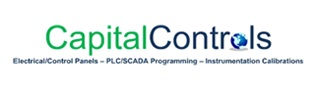

Featured projects
Representative programs demonstrating technical depth, market diversity, and platform expertise—selected for system complexity and delivery scope, not internal metrics.
Carleton Place WTP/WWTP Upgrade
Market: Municipal water and wastewater treatment
Location: Carleton Place, Ontario
Scope: Integrated control system upgrade for combined water treatment plant and wastewater treatment plant. Multi-PLC architecture with centralized SCADA, process control narratives for clarification, filtration, UV disinfection, and biological treatment systems. Allen-Bradley CompactLogix PLCs with iFix SCADA workstation.
Key deliverables: PLC programming with clear ladder logic and comprehensive documentation, HMI graphics for operator interface, instrumentation configuration (Siemens flow/level/pressure transmitters), network integration via Ethernet/IP, factory acceptance testing, site commissioning, and operator training.
B&M Hurdman Station
Market: Transit infrastructure
Location: Ottawa, Ontario
Scope: Control system integration for major transit station infrastructure. Dewatering pumps, drainage systems, HVAC control integration, and emergency backup systems—multi-discipline coordination and transit-grade documentation packages.
Key deliverables: CSA-certified control panels (NEMA 4X stainless steel), PLC/HMI programming, VFD integration for pump speed control, remote monitoring via cellular modem, comprehensive as-built documentation, and commissioning support during phased construction.
ROPEC Wastewater Treatment Facilities
Market: Municipal wastewater treatment
Location: Ottawa, Ontario
Scope: Multiple phases of control system work at Robert O. Pickard Environmental Centre including secondary clarifier rehabilitation, UV disinfection upgrades, aeration system modernization, and polymer chemical feed systems. Repeat client engagement demonstrating long-term technical partnership.
Key deliverables: ControlLogix PLC programming for large-scale WWTP processes, SCADA graphics consolidation and standardization, instrumentation supply and commissioning (analytical, flow, level), VFD configuration for blowers and pumps, network architecture with fiber optic backbone, and ongoing technical support.
TTC Warden & Islington Stations (Xylem)
Market: Transit infrastructure
Location: Toronto, Ontario
Scope: Control panel supply and integration for Toronto Transit Commission subway station dewatering systems. Submersible pump control, wet well level monitoring, high/low alarms with auto-dialer, and remote SCADA connectivity. Work performed as subcontractor to Xylem for turnkey pump station packages.
Key deliverables: CompactLogix control panels with PanelView Plus HMI touchscreens, duplex/triplex pump control with lead/lag rotation, ultrasonic level transmitters, VFD speed control for flow matching, cellular modem remote access, and 24/7 alarm notification capability.
Ottawa LRT Pump Panels & Accessory Sumps
Market: Light rail transit
Location: Ottawa, Ontario
Scope: Control panel fabrication and programming for Ottawa Light Rail Transit drainage and dewatering infrastructure. Multiple pump stations and sump control panels integrated into the LRT control architecture—transit-grade QA and traceability.
Key deliverables: CSA-certified pump control panels to transit specifications, PLC programming with redundancy and fail-safe logic, integration with LRT SCADA backbone, extensive shop drawings and submittal packages, factory acceptance testing with client witness, and field commissioning coordination with multiple trades.
Golfview Subdivision Pumping Station
Market: Sanitary sewage lift station
Location: Rondeau, Ontario
Scope: New sanitary sewage lift station for residential subdivision development. Submersible pump control with wet well level monitoring, backup generator integration, and remote SCADA access for municipal operations.
Key deliverables: Outdoor-rated NEMA 4X stainless steel control panel, CompactLogix PLC with cellular modem, ultrasonic level transmitter configuration, duplex pump control with automatic lead/lag switching, high/low level alarms, VFD speed control, and complete O&M documentation package.
Cumberland Sanitary Pumping Stations 2, 3, 4 Rehabilitation
Market: Municipal pumping stations
Location: Cumberland, Ontario
Scope: Control system rehabilitation for three existing municipal sewage pumping stations. Replacement of obsolete PLC hardware, modernization of operator interfaces, instrumentation upgrades, and integration into centralized municipal SCADA system.
Key deliverables: Migration from legacy PLC platforms to Allen-Bradley CompactLogix, new PanelView Plus HMI touchscreens, updated control logic with modern alarming and trending, Siemens ultrasonic level transmitters, Ethernet/IP network integration, and phased commissioning to maintain continuous operation.
Napanee Water Pollution Control Plant (Sheridan)
Market: Municipal wastewater treatment
Location: Napanee, Ontario
Scope: Control system work for wastewater treatment plant upgrade. Process control for influent pumping, biological treatment, clarification, UV disinfection, and sludge handling systems. Work performed as electrical subcontractor to Sheridan Construction.
Key deliverables: ControlLogix PLC programming for multi-stage treatment processes, SCADA HMI development with process graphics and trending, instrumentation supply and configuration (flow, level, analytical), VFD integration for pumps and blowers, network infrastructure with managed Ethernet switches, and comprehensive commissioning support.
Ingleside WWTP Phase 1
Market: Municipal wastewater treatment
Location: Ingleside, Ontario
Scope: New wastewater treatment plant control system. Integrated PLC/SCADA architecture for complete treatment process from influent screening through effluent discharge. Multi-phase project with ongoing expansion capability.
Key deliverables: Allen-Bradley ControlLogix PLC platform with scalable I/O architecture, iFix SCADA workstation with custom process graphics, comprehensive instrumentation package (Siemens magnetic flow meters, ultrasonic level, pressure transmitters), VFD panels for pumps and blowers, fiber optic network backbone, and turnkey commissioning with operator training.
Additional experience
Beyond the programs highlighted here, our portfolio spans municipal water and wastewater, industrial process control, and infrastructure applications. Recurring platforms include Allen-Bradley CompactLogix/ControlLogix, FactoryTalk View, iFIX, Siemens process instrumentation, and Ethernet/IP architectures.
Typical applications: Water treatment plants (raw water intake, clarification, filtration, UV disinfection, high lift pumping), wastewater treatment plants (influent screening, biological treatment, clarification, sludge handling), pumping and lift stations (sanitary sewage, stormwater, water booster), and industrial process control (chemical feed, cooling towers, compressed air).
Standard deliverables: CSA-certified control panels (UL 508A, NEMA 4X), custom PLC programming with clear documentation, HMI/SCADA graphics development, instrumentation supply and configuration, network integration, factory acceptance testing, site commissioning, operator training, and as-built documentation packages.
SCADA / HMI samples


CSA shop fabrication


References & detailed case studies
Formal references, redacted deliverables (PLC programs, HMI graphics, shop drawings), and detailed project summaries are available under NDA for qualified opportunities. Contact us to discuss your project requirements and request relevant reference materials.